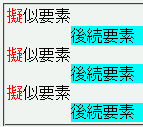
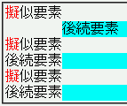

任意のブロックレベル要素Eについて以下の条件すべてが当てはまるとき、
要素Eの内容物が要素Eの左（右）マージン領域にはみ出す。
<style type="text/css">
div.fletter:first-letter {
color: red;
}
div.lmargin {
margin-left: 4em;
background: aqua;
}
</style>
<div class="fletter">擬似要素</div>
<div class="lmargin">後続要素</div>
<div class="fletter">擬似要素</div>
<div class="lmargin">後続要素</div>
<div class="fletter">擬似要素</div>
<div class="lmargin">後続要素</div>
空色の背景を設定しているdiv要素は幅4emの左マージンを設定しています。
Netscape7.1標準モード
WinIE6.0標準モード
この不具合のため左右にはみ出している内容物に:hover擬似クラスを指定したリンクが含まれている場合、リンクが:hover状態になるとそのリンクを含む内容物が移動することがあります。以下の例に含まれているリンクにマウスポインタ等を乗せると、それまで左にはみ出していた文字列がdiv要素のボックスに収まるように移動するはずです。
擬似要素を含む要素のwidthプロパティやheightプロパティの値を明示することで不具合を回避することができます。
<div class="fletter">擬似要素</div> <div class="lmargin">後続要素</div> <div class="fletter" style="width:90%;">擬似要素</div> <div class="lmargin">後続要素</div> <div class="fletter" style="width:90%;">擬似要素</div> <div class="lmargin">後続要素</div>
WinIE6.0の標準モードと互換モードで不具合の発生を確認しました。